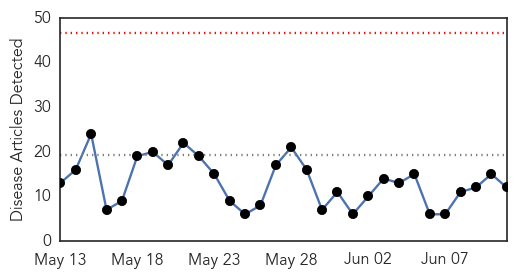

30 Day Trends
Web: 0 alerts, 0 warnings
Twitter: 4 alerts, 0 warnings
Top Articles:
- 0.960
- Hong Kong's SARS scars fuel MERS jitters as virus plan starts, Government & Economy
- 0.884
- Bird Flu confirmed in Ghana
- 0.862
- Bird Flu confirmed in Ghana
- 0.862
- Bird flu in Arizona? 4 AZ facilities quarantined, egg prices on
- 0.800
- For bird flu researchers, Delaware Bay is prime terrain
- 0.755
- Possible bird flu in Pinal, Santa Cruz counties
- 0.751
- June 10, 2015 Archives
- 0.751
- June 10, 2015 Archives
- 0.751
- June 10, 2015 Archives
- 0.751
- June 10, 2015 Archives
- 0.751
- June 10, 2015 Archives
- 0.751
- June 10, 2015 Archives
Top Tweets:
-
No tweets found for Jun 11, 2015
Web/News Articles
Tweets